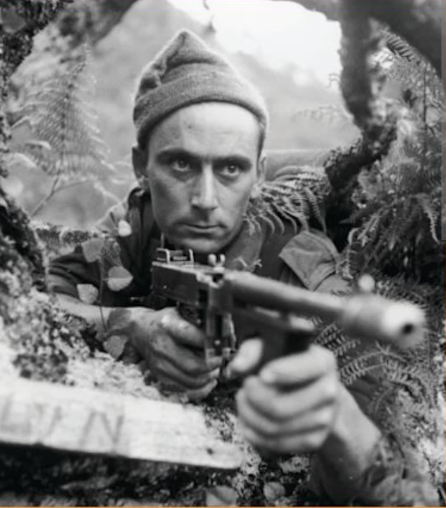
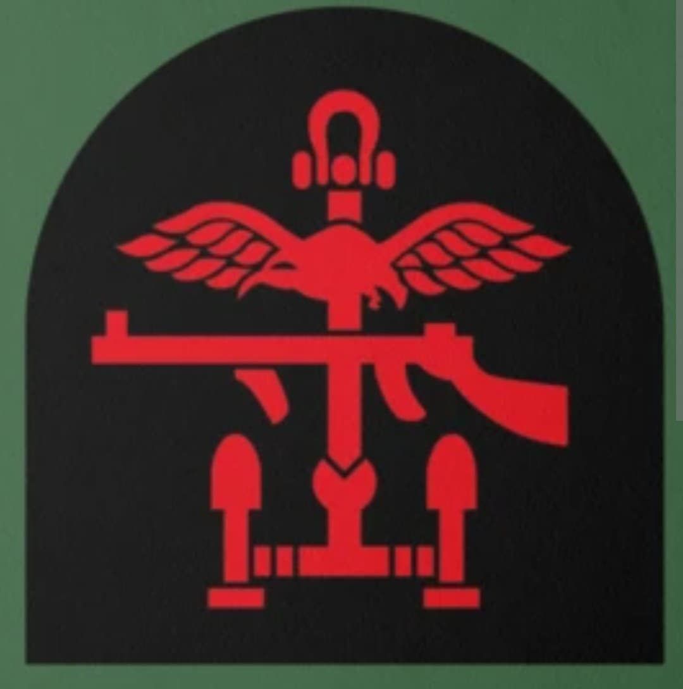
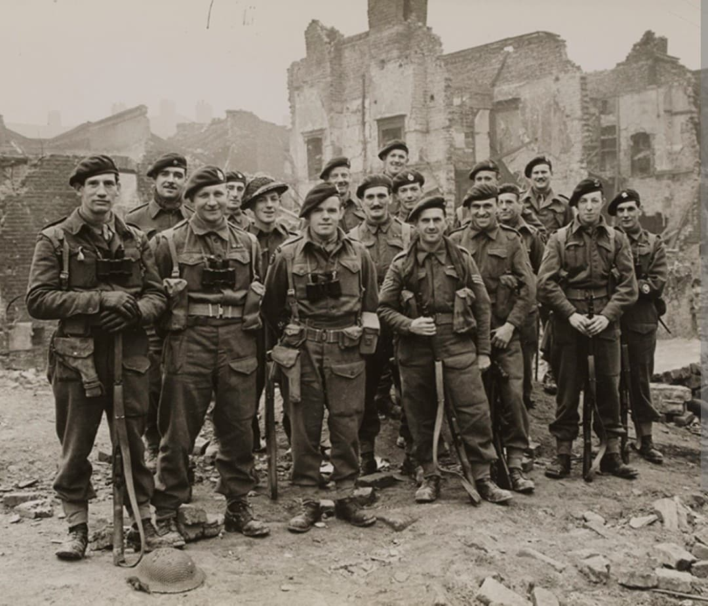

Les pionniers des forces spéciales modernes : raids audacieux, coups de main nocturnes et assauts de choc sur l'Europe occupée

Les British Commandos constituent la force spéciale d'élite créée par le Royaume-Uni au cours de l'été 1940 à la demande expresse du Premier ministre Winston Churchill. Conçus pour mener une « guerre d'embuscades et de terreur » sur les côtes de l'Europe occupée, les Commandos ont révolutionné le combat d'infanterie moderne.
Reconnaissables à leur fameux béret vert et à leur poignard Fairbairn-Sykes, ces volontaires triés sur le volet ont mené certains des raids les plus audacieux et périlleux du conflit, ouvrant la voie à la création de nombreuses forces spéciales alliées.
Formés à l'origine sous la supervision du lieutenant-colonel **Dudley Clarke**, les Commandos regroupent des volontaires venus de divers régiments de la British Army, puis de la Royal Navy et des nations alliées. Leur centre d'entraînement légendaire d'Achnacarry, dans les Highlands écossais, soumet les hommes à des épreuves d'une intensité physique et psychologique inédite.
Leur insigne d'épaule distinctif présente la dague Fairbairn-Sykes ou le titre « COMMANDO » brodé sur les manches, complété par la devise « United We Conquer » (Unis nous vainquons).

Dès 1941, les Commandos frappent la Norvège (opérations *Claymore* aux îles Lofoten et *Archery* à Vaagsö), détruisant des installations stratégiques et capturant du matériel d'encodage Enigma.
Leur exploit le plus spectaculaire demeure l'Opération Chariot le 28 mars 1942 : le raid sur Saint-Nazaire. En projetant le destroyer *HMS Campbeltown* piégé contre la porte de la forme éclusière Joubert, les Commandos neutralisent le seul bassin de radoub de l'Atlantique capable d'accueillir le cuirassé allemand *Tirpitz*, au prix d'actes d'un héroïsme inouï.

Lors du Débarquement de Normandie le **6 juin 1944**, les unités de Commandos (regroupées au sein des 1st et 4th Special Service Brigades) sont déployées à la pointe des attaques sur Sword Beach et Gold Beach. La 1st Special Service Brigade du brigadier **Lord Lovat** (accompagnée du piper Bill Millin et intégrant les Commandos français du commandant Kieffer) effectue une jonction mémorable avec les parachutistes à Pegasus Bridge.
Par la suite, les Commandos mènent l'assaut amphibie sur l'île de Walcheren aux Pays-Bas fin 1944 et franchissent le Rhin et l'Elbe au printemps 1945, confirmant leur rang parmi les combattants les plus redoutés de la guerre.
Page du Musée HOP WW2 – Section Unités & Divisions